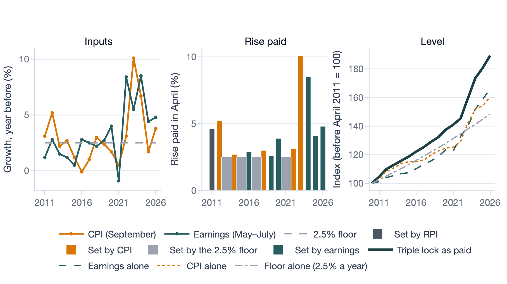
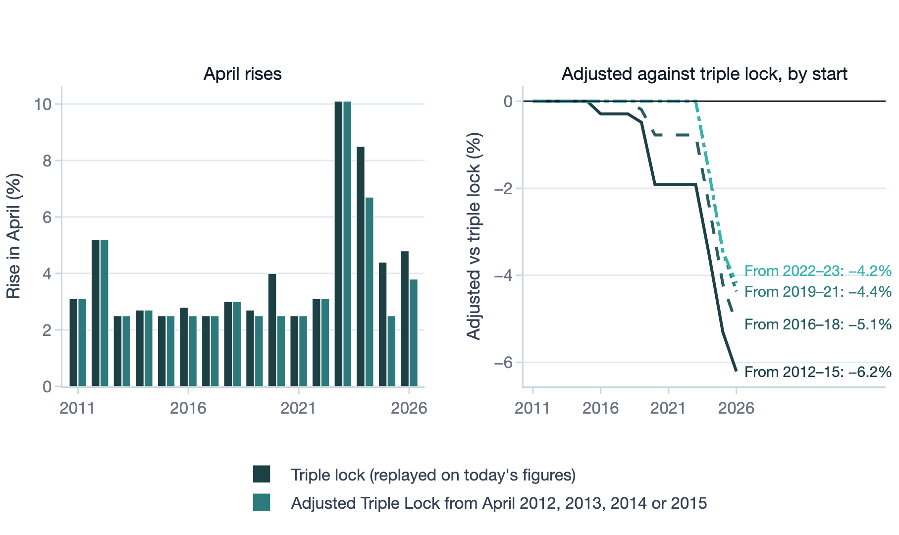
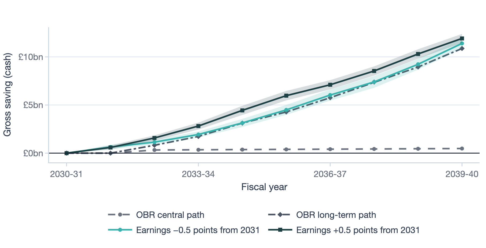
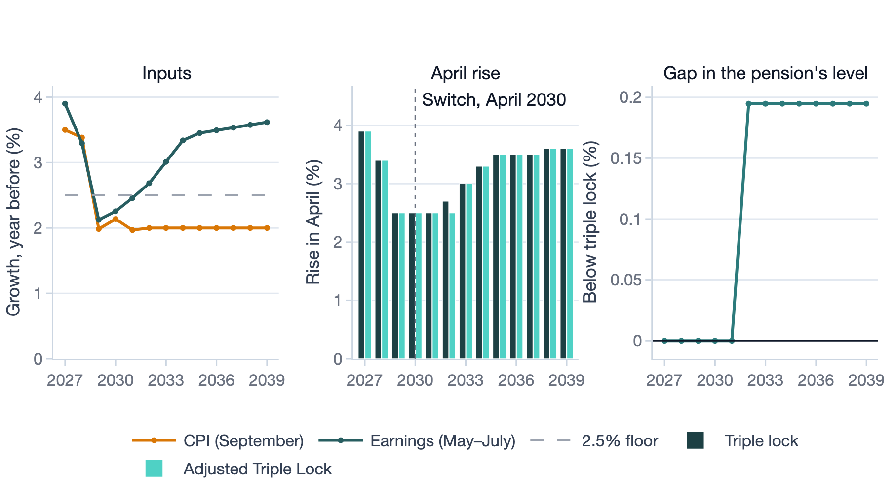
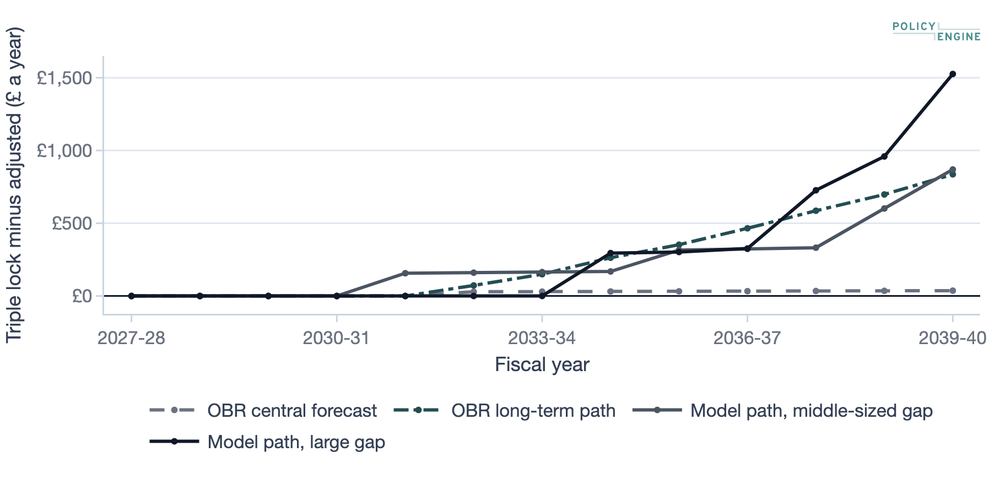
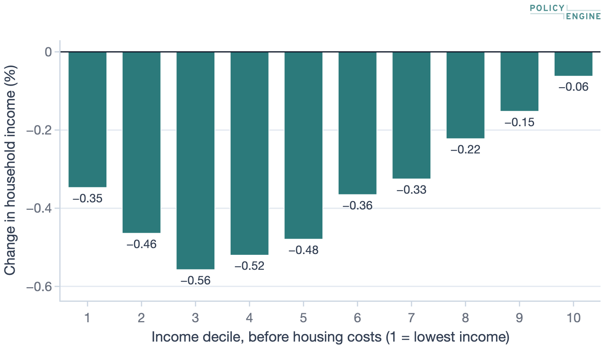
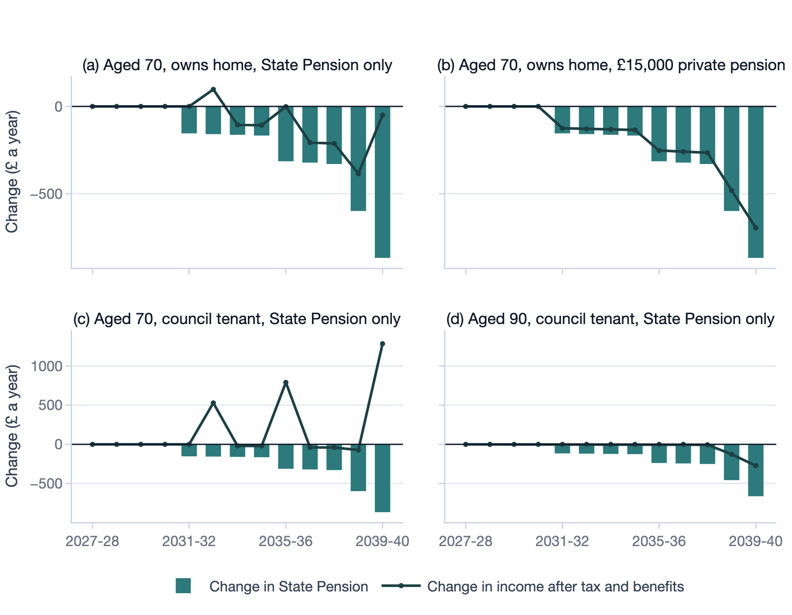

2026-11-05
We study the UK’s adjusted Triple Lock: from April 2030 the State Pension rises by the highest of 2.5%, CPI and the amount needed to keep its April 2029 value relative to earnings. Its excess over its earnings path follows a reflected (Lindley) recursion, so its gap from the triple lock grows only in years in which earnings lead after prices or the floor did. For the UK in 2039-40 it lowers State Pension spending by £0.5bn on the Office for Budget Responsibility’s (OBR) central path; by £10.9bn under the OBR’s long-term triple-lock convention, which gives the adjusted rule no premium of its own; and by £11.4bn or £11.9bn, estimated from 160 full runs, on average over simulated paths with earnings growth 0.5 points lower or higher, from a model that failed a test on past forecasts, whose rule we registered before scoring under it, by overstating how often earnings growth falls below 2.5%. These are scenarios, not an expected value, beside DWP’s £15bn for Great Britain; reweighting the paths to the realised frequency of such years lowers their gap. On the OBR long-term path, losing households have £801 a year less, and pensioner poverty after housing costs rises by 0.70 to 0.75 points, and by 1.52 on the simulated path near the 90th percentile of the gap.
Keywords: pension indexation; triple lock; path dependence; microsimulation; forecast evaluation; proper scoring rules; registered analysis plans. JEL codes: H55, H68, C53, D31.
Indexation rules set how pensions in payment keep pace with prices and earnings, and with them much of a pension system’s long-run cost (Vidal-Meliá et al. 2009; OECD 2023). A rule that pays the highest of several indices each year is asymmetric: it passes on every year in which one index leads and keeps that gain in all later years. This paper asks which part of such a rule’s excess over earnings an earnings-anchored rule removes, on which paths of the indices, and what can be reported when the model of the indices’ variation fails a test against past forecasts.
Since April 2011 the triple lock has raised the State Pension each April by the highest of prices, earnings growth and 2.5% (prices measured by RPI in its first year and by CPI since), except in April 2022, when the law suspended the earnings leg (Section 2). Because it takes the highest of three figures every year, a year in which prices or the floor run ahead of earnings raises the pension for good, and later rises build on the higher level. The OBR’s long-term projections assume that the triple lock raises the pension 0.6 percentage points a year faster than earnings (Office for Budget Responsibility 2026c), and it estimates that by 2029-30 the triple lock will have added £15.5 billion a year to spending relative to earnings uprating since its introduction (Office for Budget Responsibility 2025).
The Budget of 28 October 2026 announced the adjusted Triple Lock, to take effect from the next Parliament: the triple lock applies to each rise through April 2029, and from April 2030 the pension also falls back towards its April 2029 value relative to earnings after years in which prices or the floor beat earnings (Section 3.1). The Budget puts the saving at: “Adjusting the Triple Lock is estimated to reduce State Pension spending by £15 billion a year by the late 2030s, and by £50 billion a year by the late 2040s” (HM Treasury 2026, para. 1.29), citing DWP’s analysis of the change (Department for Work and Pensions 2026b), and it recognises that the saving depends on the path of the indices: “Under the Triple Lock, the cost of the State Pension depends on which of prices, earnings or 2.5% is highest in each year, and on how those differences compound over time. That makes it inherently hard to forecast” (HM Treasury 2026, Box 5.A). We quantify that dependence.
The adjusted Triple Lock keeps the triple lock’s protection against prices and the floor but removes the ratchet: the part of the triple lock’s excess over earnings that it keeps after earnings lead again. The adjusted rule still pays above its earnings path while an excess lasts, so its saving is less than the triple lock’s whole premium over earnings uprating. We estimate its effect against the triple lock from 2027-28 to 2039-40 with full runs of PolicyEngine UK (Ahmadi et al. 2026) on the whole survey population, on the OBR’s central path, under the OBR’s long-term triple-lock convention and on simulated paths of prices and earnings.
The main result is that the share of the triple lock’s excess over earnings that the adjusted rule removes depends on the order of the indices’ leads: all of it on the OBR’s central and long-term paths, 42% of it replayed from April 2012 on past inputs, and 51% and 78% on average on the two simulated scenarios, where most of the saving comes from year-to-year variation rather than from the paths’ mean.
The paper makes three contributions. First, we show that the earnings-anchored rule’s excess over its earnings path is a cumulative sum reflected at zero, a Lindley recursion (Lindley 1952), so its gap from the max-of-indices rule depends on the running minimum of the cumulative difference between the indices, as a lookback option’s payoff does (Goldman et al. 1979). The identity is standard; applied to indexation it gives the gap’s yearly increment, an upper bound by the smaller of the two indices’ cumulative leads, and the exact condition for a positive saving: a year in which prices or the floor lead, followed later by a year in which earnings lead (Section 3.3). Second, we measure how much of the gross saving the means-tested offsets and income tax absorb, and where the remainder falls: on the OBR long-term path the government keeps 68% of the gross saving (Section 5.4), and the loss relative to income is largest in the lower-middle deciles (Section 5.5). Third, we test the model of prices and earnings on past OBR forecasts with proper scoring rules (Gneiting and Raftery 2007; Scheuerer and Hamill 2015), under a pass rule registered before the first scores and a reporting rule registered before the second (Section 4.4) (Casey et al. 2012; Olken 2015), and show what a failed condition leaves: a scenario envelope rather than an expected value.
The saving is small on the OBR central path, on which earnings lead in almost every year, and much larger on the simulated scenarios, which differ from the central path in both the mean and the year-to-year variation of earnings growth; on a single path through each scenario’s mean inputs the gap is a small fraction of the scenario’s average (Section 5.1). Under forecast uncertainty we can bound the cost under the OBR’s convention and report scenarios, but our test does not license an expected value.
Section 2 describes the triple lock’s record and relates the paper to the literature. Section 3 states the two rules, derives where the saving comes from and replays the rule on past inputs. Section 4 describes the data, the microsimulation, the paths of prices and earnings and the registered test. Section 5 gives the fiscal effects, the mechanism along single paths and the distributional effects. Section 6 compares the results with official costings, Section 7 discusses what they imply for costing such rules, and Section 8 concludes and states the main limitations.
Figure 1 shows the rises actually paid in each April from 2011 to 2026. April 2011’s rise, 4.6%, was set by RPI under that year’s up-rating order (Social Security Benefits Up-rating Order 2011), while the replay of the CPI rule gives 3.1%. From 2012, CPI set the rise five times, earnings six times and the floor four times. In April 2022 the law suspended the earnings leg, whose input was 8.4% on today’s figures, so that year’s rise was CPI, 3.1% (Social Security (Up-rating of Benefits) Act 2021). Over the 16 rises the pension rose by 89.4% as paid.

Automatic adjustment mechanisms link a pay-as-you-go pension system’s benefits or contributions to indicators, so that its finances respond to demographic and economic change without new legislation (Vidal-Meliá et al. 2009); Knell (2010) shows how the choice of adjustment factor changes the return such a system pays. The indexation of pensions in payment is one such link, and the OECD’s review of the inflation surge since 2021 records how far different rules protected pensioners’ purchasing power (OECD 2023). The triple lock is unusual in taking the highest of three figures each year, and Portes (2023) places it in the longer history of the State Pension’s value relative to earnings. A rule that pays the higher of two growth rates and compounds the result has the structure of a path-dependent option. The triple lock’s excess over earnings, the sum of each year’s lead of prices or the floor over earnings, compounds a yearly local floor, as a cliquet or ratchet guarantee does (Hardy 2003; Tiong 2000), while the adjusted rule’s gap depends on a running minimum of the cumulative difference between the indices, as a lookback option’s payoff depends on the running minimum of a price (Goldman et al. 1979; Conze and Viswanathan 1991).
The option analogy connects the paper to the valuation of guarantees. Merton (1977) values a loan guarantee as a put option, Lucas (2012) argues that public guarantees and policies should be valued at market prices that charge for the risk they carry, and Geanakoplos and Zeldes (2010) apply that approach to accrued Social Security benefits. In pension finance, Jong (2008) values the liabilities of a fund that indexes benefits only when its funding allows, an option embedded in the indexation rule. We measure the cost in cash, undiscounted and with no charge for risk, because that is the measure in which official costings of uprating rules are stated and the paper compares with them; a market value of the triple lock’s guarantee would also need a price for UK earnings and inflation risk, which we leave aside. We use the option analogy for the structure of the payoff only.
The same guarantee can be read as risk sharing between generations. Indexation decides who bears the risk in a pay-as-you-go system’s returns: Shiller (1999) argues for designing social security to share income risk across generations, Bohn (2009) shows how fiscal policy and benefit rules allocate aggregate risk between cohorts, and Auerbach and Lee (2011) compare how sustainable unfunded systems with different adjustment rules spread demographic and economic shocks. The triple lock insures pensioners against years in which prices or the floor beat earnings, permanently and at the expense of later taxpayers; the adjusted rule keeps that insurance only until earnings catch up, and so moves the risk of a fall in the pension relative to earnings back to pensioners for a time. We measure the fiscal side of that transfer, not its welfare value.
Long-run projections of pension spending are uncertain, and stochastic projections of social security finances express that uncertainty as distributions over paths of demographic and economic inputs (Lee and Tuljapurkar 1998). The OBR’s fiscal risks and sustainability reports treat the triple lock as a source of fiscal risk and project its cost against earnings uprating (Office for Budget Responsibility 2025); in the long-term scenarios of its 2026 Fiscal risks and sustainability report, as summarised in the October 2026 outlook, the triple lock accounted for around a third of the projected rise in State Pension spending as a share of GDP (Office for Budget Responsibility 2026a, para. 3.48). Central banks and fiscal analysts publish fan charts to show the uncertainty around a central projection (Britton et al. 1998; Celasun et al. 2006). A model that supplies such a distribution can be tested against outcomes: probability integral transforms check its calibration (Diebold et al. 1998), a forecast should be as sharp as its calibration allows (Gneiting et al. 2007; Mitchell and Wallis 2011), and proper scoring rules reward a forecaster for reporting its true predictive distribution (Gneiting and Raftery 2007), including for multivariate outcomes (Scheuerer and Hamill 2015). Density forecasts of inflation and output are better calibrated when they allow volatility to change over time (Clark 2011), which our model does not. Official fiscal forecasts have their own evaluation literature, which scores their errors and biases after the event (Leal et al. 2008); we know of no earlier test of a stochastic model of uprating inputs against official forecast vintages before its paths are used for costing.
Static tax-benefit microsimulation applies the rules of the tax and benefit system to a representative survey of households, with behaviour held fixed, and is the standard tool for the distributional analysis of benefit reforms (Sutherland and Figari 2013); UKMOD is one such model for the four nations of the UK (Richiardi et al. 2021). Dynamic microsimulation models instead project individual life courses, including pension entitlements, forward in time (Li and O’Donoghue 2013); DWP’s costing of the adjusted Triple Lock uses one (Section 6). The net saving depends on how many newly entitled pensioners claim Pension Credit, and take-up of means-tested benefits responds to the size of the entitlement and the cost of claiming (Pudney et al. 2006); our runs hold each benefit unit’s claim decision fixed. Pre-analysis plans fix a study’s hypotheses and tests before the data are seen, so that results cannot be chosen after the fact (Casey et al. 2012; Olken 2015), and Christensen and Miguel (2018) review their spread in economics. They are rare in model-based policy costing, where the analyst chooses both the model and its evaluation; Section 4.4 describes the plan we registered and how it changed after the first scores.
Under the triple lock the full basic and new State Pension rise each April by the highest of three figures: the CPI 12-month rate for the previous September (Office for National Statistics 2026c); growth in average weekly earnings, whole-economy total pay, in May to July of the previous year (Office for National Statistics 2026b); and 2.5%. ONS publishes both inputs to 0.1 point, and both rules here use them at that precision. We index each input by the April it sets: is the September CPI rate and the May–July earnings growth published before April , and is the 2.5% floor. Fiscal year pays the level set in April .
The adjusted Triple Lock follows the triple lock to April 2029. From April 2030 let be the pension’s level and an earnings path that starts at the 2029-30 level and grows with May–July earnings, . Then
The pension never rises by less than the higher of CPI and the floor, and never falls below its earnings path. In April 2030 this rise equals the triple lock’s, since the earnings path starts at the same level, so the two rules can first differ in April 2031 and the saving in 2030-31 is zero on every path. As a modelling assumption we round any top-up to the earnings path up to the next 0.1 points, so the pension never ends below that path; a top-up therefore leaves the pension at most 0.1% above its earnings path, and the margin does not accumulate, because each top-up is set afresh against .
The Budget states the rule: from April 2030 the State Pension rises “by the highest of 2.5%, inflation, or the amount required to maintain its value relative to earnings as reached in April 2029” (HM Treasury 2026, para. 5.23 and Box 5.A), and adds that “It removes the ‘ratchet’ effect, whereby the State Pension rises ever higher relative to earnings” (HM Treasury 2026, ch. 1). Its wording fixes the anchor: the pension’s value relative to earnings “as reached in April 2029”. DWP’s description says the same in other words: the pension will “reach a record high relative to earnings over the coming three years”, and from April 2030 it keeps pensioners benefiting “via the State Pension retaining that record high value relative to earnings”: “In any given year it will go up by at least inflation or 2.5% – and anything more that is needed to retain that value”. It adds: “This means that over time the State Pension is set to rise in line with average earnings” (Department for Work and Pensions 2026b). Two choices remain ours. The rule uses the triple lock’s measures, September CPI and May–July earnings, and the top-up is rounded up, as above.
The government announced on 29 September 2026 that it would keep the triple lock for each rise through April 2029 and adjust it from April 2030, and DWP published its analysis the same day (Department for Work and Pensions 2026b). The OBR writes that its estimates of the change “depend critically on the order, level and covariation of wage growth and inflation over time” (Office for Budget Responsibility 2026a, para. 3.53). The law requires only that the basic and new State Pension rise at least in line with earnings, in Great Britain under section 150A of the Social Security Administration Act 1992 (Social Security Administration Act 1992), and in Northern Ireland by a corresponding order under section 132A of the Social Security Administration (Northern Ireland) Act 1992 (Social Security Administration (Northern Ireland) Act 1992); the prices leg and the floor are policy on top. In a year when the adjusted Triple Lock rises by the higher of CPI and the floor while its level returns towards its earnings path, its rise is below earnings growth, which section 150A does not allow, so the rule needs primary legislation amending section 150A and its Northern Ireland counterpart, as the suspension of the earnings leg for April 2022 did (Social Security (Up-rating of Benefits) Act 2021). On both OBR scenarios this happens once, in April 2032; on the model paths near the median and the 90th percentile of the gap, in four and five of the Aprils from 2031 to 2039.
When earnings lead, both rules give the same rise. The rules part only after a year in which the higher of CPI and 2.5% beats earnings. Both pay that higher figure, but it lifts the adjusted Triple Lock above its earnings path. When earnings lead again, the triple lock rises with earnings from the higher level, while the adjusted Triple Lock rises only by the higher of CPI and the floor until its earnings path catches up. Under the triple lock each such rise stays in the pension’s level; under the adjusted rule the level returns to its earnings path over the following years.
A two-year example shows the arithmetic. Suppose CPI is 6% and earnings growth 2% in the first year, then CPI 2% and earnings 4%. The triple lock rises by 6% and then 4%, 10.24% in all. The adjusted Triple Lock also rises by 6% in the first year, which leaves it 3.85 log points above its earnings path, and then by the floor, 2.5%, 8.65% in all. In the second year earnings lead by 1.45 log points, less than the excess, so the whole lead becomes the gap: the adjusted rule ends 1.4% below the triple lock (1.59 points less cumulative growth). The next subsection states this in general.
Write for the higher of CPI and the floor that applies in April , and for April 2029, the last rise under the triple lock alone. With the triple lock’s level and and as above,
with . Let , positive in a year in which CPI or the floor beats earnings, and measure each rule’s level against the earnings path, and . Then
The triple lock accumulates every positive , while the adjusted rule’s is a cumulative sum reflected at zero, a Lindley recursion (Lindley 1952). With and , the log gap between the rules, , is and
Proposition. The gap never falls, and it grows only in a year in which earnings lead while the adjusted rule is still above its earnings path, by the smaller of earnings’ lead and the remaining excess. The gap after April is positive if and only if some year in which prices or the floor lead () is followed by a later year in which earnings lead (). In particular the gap is zero on any path on which earnings lead in every year and on any path on which they never lead, and a lead for prices or the floor in the final year alone gives no saving. The first appendix gives the proof.
Because on every path, a path on which earnings lead in every year after the switch gives the smallest possible saving, zero. A path close to that, such as the OBR’s central path, gives a saving close to zero, and a distribution of paths with changes of lead gives a positive average. The proposition does not say that variation around a given path raises the saving above that path’s own: adds a convex term in the yearly differences to a concave one, so a spread around a path with a positive gap can lower it. The triple lock’s log level is convex in each year’s input difference, so variability raises it on average; the adjusted rule’s gap has no such property, so whether variation raises the expected saving depends on the model of the inputs, and Section 5 reports scenarios rather than that expectation. For any model of the inputs the bound above gives . The increment also says when the saving appears: larger earnings leads use up the excess faster, so higher earnings growth after a year of high inflation brings the saving forward.
The gross saving in a fiscal year is the difference in basic and new State Pension paid,
where is the survey weight of person , their basic or new State Pension under each rule and total spending on both under the triple lock; the approximation is exact, up to rounding, when each person’s amount is a fixed share of the full rate. The net saving is the change in the government’s direct budget balance, , where is the weight of household and the direct taxes it pays less the benefits it receives, State Pension included. The rounding of the top-up to the earnings path adds a small non-negative term to , so the identities, and the proposition’s “if and only if”, hold for the unrounded rule; in the model runs a rounded top-up can leave a small excess that a later earnings-led year turns into gap. On the paths run in full the rounding changes in 2039-40 by at most 0.03 log points.
The decomposition can be checked on the inputs that have already occurred, with no model of their future path. The replay uses today’s revised ONS figures, so that both rules see the same inputs. It differs from the rise paid in April 2016, 2019, 2020 and 2025, by 0.1 to 0.3 points, because earnings figures have since been revised, and in April 2011, which RPI set. In April 2022, when the law suspended the earnings leg, the replay’s earnings path grows by that year’s CPI, 3.1%, the figure the rise followed, rather than by the published earnings figure. On the replay the triple lock rose 87.4%, against 66.2% for earnings alone and 60.2% for prices alone, which leaves it 12.7% above where an earnings link alone would have taken it.
Table 1 and Figure 2 replay the adjusted Triple Lock on today’s figures from each earlier April. Had it started in April 2012, 2013, 2014 or 2015, its level in 2026-27 would be 6.2% below the triple lock’s on the same inputs. Applied to the full new State Pension actually paid, £12,548 a year, that would be £11,769. Most of the difference follows April 2023, when September CPI of 10.1% set a rise far above earnings growth of 5.5%; the gap opened in the earnings-led Aprils after it, as the increment formula says. Of the triple lock’s log excess over its earnings path from that start, = 15.15 log points, the adjusted rule removes = 6.41, or 42%; the rest is the excess it still carries. Started in April 2024, 2025 or 2026, the rule would have paid the same as the triple lock every year, because earnings have led in every April since. In full model runs, State Pension spending in 2026-27 would have been £7.8bn lower, and the government £5.6bn better off once tax and benefits respond. Averaged over the Aprils from 2012 to 2026, the pension would have been 1.6% below the triple lock.
Table 1: The adjusted Triple Lock replayed on today’s figures from earlier starts: how far its level ends below the triple lock’s, the changes of lead between earnings and the higher of CPI and the floor in the Aprils from the start to the last, and the Aprils in which it rose by less than the triple lock (rule arithmetic).
| Start | Level below the triple lock, 2026-27 | Changes of lead | Aprils with a smaller rise |
|---|---|---|---|
| April 2012, 2013, 2014 or 2015 | 6.2% | 5 | 2016, 2019, 2020, 2024, 2025 and 2026 |
| April 2016, 2017 or 2018 | 5.1% | 4 | 2019, 2020, 2024, 2025 and 2026 |
| April 2019, 2020 or 2021 | 4.4% | 2 | 2024, 2025 and 2026 |
| April 2022 or 2023 | 4.2% | 1 | 2024, 2025 and 2026 |
| April 2024, 2025 or 2026 | 0.0% | 0 | None |
Note: Starts in the same row give the same levels; changes of lead are counted from the earliest.

Every saving and household figure for a given path is a full run of PolicyEngine UK (Ahmadi et al. 2026; PolicyEngine 2026b, 2026c) on the whole survey population, once under each rule. PolicyEngine UK is a static tax-benefit microsimulation model of the kind Sutherland and Figari (2013) describe: it applies the tax and benefit rules of each year to survey households and allows no behavioural response. All runs use policyengine 6.11.1, which pins policyengine-uk 2.151.0 and policyengine-core 3.33.3, with the national Microcosm dataset for 2024-25 published with it (78,234 households) (PolicyEngine 2026a). The Enhanced Family Resources Survey, version 1.58.2, runs only for the check against DWP’s caseloads (Table 8). A path’s CPI and earnings growth replace the model’s economic assumptions before the data load, so benefit rates, tax thresholds and earnings follow it, and every run checks that they do. Only the basic and new State Pension differ between the two runs of a path. Under both rules the additional State Pension rises with September CPI and State Pension age follows the law’s timetable. Pension-age Housing Benefit is modelled as under current law. Money is in cash terms for the UK unless stated.
Three conventions shape the net saving. First, the Pension Credit guarantee rises with May–July earnings, the minimum section 150A requires, under both rules. In each April since 2022 the guarantee has in practice risen by the same percentage as the State Pension, as in April 2023, when both rose by 10.1% against earnings growth of 5.5% (Social Security Benefits Up-rating Order 2023); in earlier years in which prices or the floor set the State Pension’s rise it sometimes rose by less, by the basic State Pension’s cash increase in April 2013 and 2021 and by about earnings in April 2018 (Social Security Benefits Up-rating Order 2013, 2018, 2021). Neither the Budget nor DWP’s analysis says how the guarantee will be uprated under the adjusted Triple Lock. If it rose by the same percentage as the State Pension under each rule, it would be lower under the adjusted rule, the Pension Credit offset would be smaller and the net saving larger (Section 5.4 bounds the effect). Second, the income tax personal allowance stays at £12,570 to 2030-31, as current law sets it, and then rises with each path’s September CPI; from April 2031, when the rules can first differ, the full new State Pension is above it, so a lower pension means less income tax even for a pensioner with no other income. The Budget’s Pension Tax Allowance removes income tax for pensioners whose total income is at or below the full new State Pension from April 2027 to April 2030 (HM Treasury 2026, Table 6.1); it lapses before the two rules can first differ, so it does not affect the differences reported here. The Budget leaves arrangements beyond April 2030 open; we assume no successor. A successor tied to the full new State Pension would scale with each rule’s pension and reduce the income tax offset for pensioners with incomes near that level. Third, Pension Credit take-up follows the dataset’s own claim decision for each benefit unit, so a household newly entitled under the adjusted rule claims only if that decision says it would; Housing Benefit and council tax reduction respond only for households already receiving them, and passporting from the guarantee credit follows actual receipt.
The dataset represents households in 2024-25, and each record stands for a person of its age in every year. Through 2025, the year the dataset calibrates to, each record keeps its own weight; after it, household weights are reweighted so that each age and sex group grows as in the ONS’s 2024-based population projection (Office for National Statistics 2026e). Ages are not top-coded, so every recorded age is kept. Each person’s State Pension type follows from the date of birth that their age implies in each year: those who reach State Pension age before 6 April 2016 are on the basic State Pension, later cohorts on the new one (Pensions Act 2014). A record of a given age therefore moves from the basic to the new State Pension as later cohorts reach that age. Deaths, migration and contribution histories are not simulated, and pensioners abroad are outside the dataset. Records carried forward from today’s pensioners may understate the entitlements of people reaching State Pension age in the 2030s, most of whom will have spent their whole working lives under the new State Pension.
The OBR central path uses the OBR’s October 2026 Economic and fiscal outlook, published with the Budget, for calendar years to 2030 (Office for Budget Responsibility 2026a), and the OBR’s March 2026 long-term economic determinants after that (Office for Budget Responsibility 2026c), which the OBR describes as a projection, not a forecast; the OBR published no long-term determinants with its October forecast. We call the combination the OBR central path. April 2027’s State Pension rise uses the published May–July 2026 earnings growth, 3.9%, and September 2026 CPI, 3.5% (Office for National Statistics 2026b, 2026c). For the Aprils 2028 to 2031 the inputs are the OBR’s September-quarter CPI and April–June earnings growth; later Aprils use its calendar-year figures. The OBR forecasts average earnings on a national-accounts measure, which stands in here for May–July average weekly earnings. Both rules share these inputs.
The simulated paths come from a model of monthly changes in the CPI index (Office for National Statistics 2026d) and in average weekly earnings (Office for National Statistics 2026a), fitted to data from 2000 to the latest published month, with the furlough months of 2020–21 left out. Each month’s change depends on the previous month’s changes in both series, with fixed coefficients; the shocks are past pairs of residuals drawn at random, so prices and earnings keep their joint variation, but the model has no periods of higher or lower volatility and no uncertainty about its coefficients. From the simulated months come both the statutory inputs (September CPI, May–July earnings growth) and the calendar-year growth the rest of the model uses. Every path is then shifted by the same smooth drift so that the average calendar-year growth matches the OBR’s forecast in every year, while each path keeps its own ups and downs. The earnings scenarios move that drift by 0.5 points a year from 2031.
The shift matches calendar-year means only, so the statutory inputs that drive both rules are centred off the central path’s (Table 2). Over the Aprils 2031 to 2039 the scenarios’ mean September CPI is 0.11 points below the central path’s, and their mean May–July earnings growth is 0.50 points below it with lower earnings growth and 0.38 points above it with higher, so the two scenarios are not centred on the central path. The simulated paths also have earnings growth below 2.5% in 43.0% and 26.1% of those Aprils, beside the 44.6% that the model expected and the 17.9% realised in the test on past forecasts (Section 4.4). These and the other averages over the sampled paths below are rule arithmetic on the stored inputs of the paths run in full, weighted as the fiscal figures are; none is a fiscal result.
Table 2: The statutory inputs setting each April’s rise: the OBR central path’s, and the average over the simulated paths of each earnings scenario (rule arithmetic on the stored inputs of the paths run in full, weighted as the fiscal figures are), %. September CPI is the same in both scenarios, which move earnings only.
| April | CPI: OBR central | CPI: simulated | Earnings: OBR central | Earnings: simulated, −0.5 | Earnings: simulated, +0.5 |
|---|---|---|---|---|---|
| 2030 | 2.14 | 2.15 | 2.26 | 1.84 | 1.88 |
| 2031 | 1.97 | 1.66 | 2.46 | 2.59 | 2.48 |
| 2032 | 2.00 | 1.98 | 2.68 | 2.08 | 3.13 |
| 2033 | 2.00 | 1.93 | 3.01 | 2.56 | 3.54 |
| 2034 | 2.00 | 2.12 | 3.34 | 2.79 | 3.79 |
| 2035 | 2.00 | 1.92 | 3.45 | 2.92 | 3.92 |
| 2036 | 2.00 | 1.85 | 3.49 | 2.83 | 3.83 |
| 2037 | 2.00 | 1.93 | 3.53 | 2.85 | 3.85 |
| 2038 | 2.00 | 1.76 | 3.58 | 2.86 | 3.85 |
| 2039 | 2.00 | 1.77 | 3.62 | 3.16 | 4.16 |
We count a change of lead as a change in the sign of May–July earnings growth less September CPI between consecutive Aprils, a tie keeping the previous lead, and give every rate per April transition. On the main version’s simulated paths the lead changes 0.43 times per transition, and on the earnings scenarios’ paths 0.46 with lower earnings growth and 0.39 with higher. In the test on past forecasts the main version expected 0.35 per transition, against 0.33 realised (1.06 and 1.00 per four-year window of three transitions). In the inputs that set the April rises of 2011 to 2026 the rate was 0.33 with April 2022 as in law and 0.47 on the published earnings figure for that year; on calendar-year CPI and average earnings from 1989 to 2025 it was 0.17. The forward rate is thus above the backtested one, the record since 2011 and the longer record, which is dominated by years in which earnings led, and it is higher on the scenario whose earnings growth sits closer to CPI. We have not tested how it depends on the window the model is fitted to. Counting the lead between earnings and the higher of CPI and the floor, as the rule does () and as Table 1 and Table 5 do, the scenarios’ paths change lead 0.50 and 0.42 times per transition from April 2030, and the OBR central path changes lead once from April 2030 to 2039.
The fiscal averages for the earnings scenarios do not average every draw. The model makes 50,000 equally weighted draws of the main version; we sort them into ten groups of equal size by the gap between the rules in 2039-40 on those unshifted draws, plus a group in which the rules pay the same, and run 160 of them in full, allocated across the groups in proportion to each group’s size and the spread of that gap within it, with at least two a group. Both earnings scenarios use these groups, this allocation and the same draws, shifted in opposite directions; each scenario’s average is a stratified estimate of the mean over all 50,000 draws, computed from its own full runs with the groups’ weights, and the 2034-35 averages use the same groups. Its margin is a 95% Monte Carlo interval from a standard error that combines the sampling of the full runs with the sampling of the draws. The margin is conditional on the model and leaves out uncertainty about its coefficients. Since the gross saving is close to and is known by rule arithmetic for every draw, a regression estimator on would narrow the gross margins; we keep the registered estimator.
An average over the simulated paths needs a model whose paths behave like the real inputs, so we registered a test on past OBR forecasts (Office for Budget Responsibility 2026b) before scoring any model. Five versions of the model of prices and earnings are fitted only on data available before each forecast, centred on that forecast, and scored, with proper scoring rules for each statistic and for the joint outcome (Gneiting and Raftery 2007; Scheuerer and Hamill 2015) and with the coverage of central bands, on the gap between earnings and CPI in each year, on how often the lead changes, on how often earnings growth falls below 2.5% and on the gap the two rules open after four rises. One test uses seven forecasts, one a year from the March 2016 EFO to the March 2022 EFO; another uses thirteen, from the June 2010 Budget forecast to the March 2022 EFO. Table 3 gives the pass rule; the thresholds were fixed together, as a broad screen, before any score was seen, and the record of the rule gives no other basis for any one of them. The accuracy condition compares versions with each other, so the main version meets it by construction, and its calibration rests on the coverage and bias conditions.
The rule changed once, after the first scores and before the second. Under the first rule every version failed, because April 2022 was scored on the published earnings: each had only one of six four-year outcomes inside its band, because the furlough schemes distorted 2021 pay growth. The second rule differs from the first in two elements, both fixed after we had seen the first scores: it scores April 2022 as the law applied it, with the earnings leg suspended, and it no longer lets another version replace a main version that fails. We recorded it in a dated section of the analysis plan, committed on its own on 6 October 2026, before any score under it was computed.
The first rule would have taken, after a failure of the main version, the passing version with the lowest average ratio of its scores to the main version’s; on the second rule’s scores that is Monthly, two lags, which passes, so the first rule’s fallback would have authorised an average over its paths. The second rule instead allows only a passing main version to supply an average, and if the main version fails the analysis reports scenarios only. Whatever the verdict, it keeps four scenarios: the OBR central path, the OBR long-term path, the historical replay and the paired paths with earnings growth 0.5 points lower and higher. Every other element, including all thresholds in Table 3, is as first registered.
With the data available at the October 2026 Budget, the main version failed one condition (Table 9, Table 10). It expected earnings growth below 2.5% in 44.6% of the years tested on the seven-forecast test, against 17.9% in practice, about 2.5 times as often, on an event that sets . That average error, 0.267, exceeds the limit of 0.25 by 0.017; the main version would pass at a limit of 0.27, with every other element of the rule unchanged. The error is 2.6 standard errors from zero, using a Newey–West standard error of 0.101 with three lags over the seven overlapping windows. The rule compares point estimates with the limit, and the 95% interval, 0.07 to 0.46, contains it. All five versions share the error, with floor biases from 0.243 to 0.275. The main version also expected earnings growth to exceed CPI by 1.00 points more than it did (2.3 standard errors from zero), inside the limit of 1.5 and in the same direction for every version, against 0.29 with April 2022 as published. Taken together with the floor bias, this says the paths place earnings growth too high on average and too often below 2.5%, that is, too dispersed, a cause the versions share; centring every path on the OBR’s point forecasts and the shared pool of residuals both bear on it, and the test does not separate them.
The main version passed every other condition. The outcome fell inside its central 80% band in five of seven four-year windows and 83% of annual checks, and its lead changes were close to those realised. On the published 2022 earnings, a sensitivity that does not enter the verdict, it expected 1.29 changes of lead per window against 1.86. The realised gap since 2011 sits at the 55th percentile of its paths. Two other versions passed and two failed on the same condition, but the rule forbids promoting another version, so this paper gives no expected value.
The test has little power. With seven overlapping four-year windows, a model whose bands cover far less than 80% could still pass, and because the upper limit on coverage is 100%, the coverage condition cannot detect bands that are too wide. A third registered rule applies only to estimates that use OBR forecasts published after this paper’s inputs, and adds a test on outcomes not yet observed. On simulated outcomes a correct model passes that test 35.8% of the time after four years, 68.5% after eight and 85.6% after twelve, and a model that states double the true rate of earnings growth below the floor passes 35.1%, 43.1% and 63.7%, so four years cannot tell the two apart. That rule gives its first verdict after eight years of outcomes, from 2027 to 2034, so the first test of whether averages over the paths may be reported as estimates can be made in October 2034, when the last of those inputs, September CPI, is published.
Table 3: The pass rule for the test on past forecasts, April 2022 scored as the law applied it.
| Condition | Threshold |
|---|---|
| Coverage | Between 50% and 100% of outcomes, yearly and after four years, fall inside the central 80% band |
| Coverage, plausible range | The range of plausible coverage after four years includes 80% |
| Bias in the yearly gap | Average error in earnings minus CPI at most 1.5 points |
| Bias in lead changes | Average error in the number of lead changes at most 1.0 a forecast |
| Bias in floor years | Average error in the share of years with earnings growth below 2.5% at most 0.25 |
| Accuracy scores | No score more than 25% worse than the main version’s |
| Past years | The realised gap since 2011 between the 5th and 95th percentiles of its paths |
Note: A version passes only if it meets every condition on both tests.
Table 4 gives the reduction in State Pension spending under the adjusted Triple Lock, relative to the triple lock, on four scenarios, and Figure 3 the gross saving in each year. Two are single full runs. One is the OBR central path. The other, the OBR long-term path, keeps the central path’s inputs but pays the triple lock at the OBR’s long-term triple-lock rate from April 2032, which phases in to earnings growth plus 0.6 points, and applies the adjusted rule to the same inputs. The other two take 160 simulated paths of prices and earnings, each a full run under both rules, and move calendar-year earnings growth 0.5 points a year lower or higher from 2031 (Section 4.3). We attach no probability to any of them, and the four do not form a probability interval.
On the OBR long-term path the saving is £10.9bn in 2039-40, £7.3bn once income tax and benefits respond: extra Pension Credit offsets £0.8bn and lower income tax £2.4bn. The adjusted rule’s level on this path is the same as on the central path, £18,840 a year for the full new State Pension in 2039-40, because the two runs share their inputs; only the triple lock differs. Earnings lead CPI and the floor in every April from 2032, so the adjusted Triple Lock returns to its earnings path and then follows it, and the whole of the triple lock’s excess counts as saving (). is the central path’s gap, 0.19 log points, plus the sum from April 2032 of the log differences between the OBR’s long-term triple-lock rate and May–July earnings growth, 4.15 log points, 4.34 in all by 2039-40, and gives 4.25% of £255.8bn in basic and new State Pension spending. Once the premium is fully in, the yearly difference runs from 0.5 to 0.7 points rather than exactly 0.6, because the OBR states its premium against national-accounts earnings and the rule pays it to 0.1 points against May–July earnings. The premium is the OBR’s average allowance for years in which CPI or the floor beat earnings, and no path of CPI and earnings pays it every year.
This scenario bounds the saving from above under the OBR’s convention, and only under it: the saving if the OBR’s premium is paid in full and the adjusted rule pays none. Since on every path (Section 3.3), and the premium stands for the triple lock’s average excess over earnings, the expected gap under that convention cannot exceed the premium’s cumulated value; because is concave, Jensen’s inequality gives the same for the share of spending. The argument reads the premium as the expectation of from the April 2029 anchor and holds the base at the triple lock’s. The OBR’s own figures agree: its replay of 1990–2025 leaves the adjusted rule above earnings uprating on average (Office for Budget Responsibility 2026a, para. 3.51), and its provisional long-term estimate leaves debt above an earnings-uprating scenario because it expects periods in which inflation or the floor would still bind (Office for Budget Responsibility 2026a, para. 3.52).
The two earnings scenarios give £11.4bn and £11.9bn in 2039-40. They are averages over paths from the model that failed the test, carry the same failed condition, and are reported because the registered rule keeps them as scenarios whatever the verdict, not because they are more reliable than the average it withdrew. They are not a range around an unshifted case, and their midpoint is not an estimate of the withdrawn average. They exceed the OBR long-term path because on the simulated paths the triple lock’s cumulated excess over earnings is larger than the OBR’s premium gives: its average log excess over May–July earnings from April 2030, in 2039-40, is 8.78 and 5.79 log points, against 4.34 on the OBR long-term path. In April 2034 to 2039 the simulated triple lock pays 0.74 and 0.39 points a year above May–July earnings, against 0.58 on that path, so with higher earnings growth more of the excess arrives in the Aprils before the OBR’s premium is fully in. The adjusted rule removes 51% and 78% of that excess on average.
As shares of basic and new State Pension spending the two scenarios save both 4.4% in 2039-40 (log gaps of 4.48 and 4.50 points). Because they share draws, shocks and full-run selection, their difference is measured path by path: in rule arithmetic on the shared paths, the higher-earnings scenario’s share exceeds the lower’s by 0.02 ± 0.34 points in 2039-40, which cannot be told from zero, so most of the cash difference comes from the larger pension base that faster nominal earnings growth brings. Earlier the scenarios differ. In 2034-35 the saving is £4.4bn with higher earnings growth against £3.1bn with lower, 2.2% against 1.6% of spending, a paired difference of 0.63 ± 0.16 points: larger earnings leads use up the adjusted rule’s excess over its earnings path sooner, so the increment in Section 3.3 brings the saving forward.
The scenarios differ from the central path in both the mean and the variation of their inputs (Table 2), so the comparison with the central path does not by itself measure an effect of variation. Rule arithmetic separates the two. On a single path through each scenario’s mean statutory inputs, in 2039-40 is 1.07 log points with lower earnings growth and 0.58 with higher, against averages over the scenarios’ paths of 4.51 and 4.53. (These are averages of across paths, slightly above the log gaps in Table 4, which are taken from the average share.) The year-to-year variation around those means thus accounts for 3.44 and 3.95 log points, most of each scenario’s gap.
The failed condition bears on these averages, and a diagnostic, not an estimate, shows which way. Reweighting each scenario’s sampled paths by exponential tilting on their number of Aprils from 2031 to 2039 with earnings growth below 2.5%, so that the share of such Aprils equals the 17.9% realised in the test, lowers the average in 2039-40 from 4.51 to 3.39 log points with lower earnings growth and from 4.53 to 3.89 with higher, with effective sample sizes of 22 and 82 sampled paths against 111 before the tilt (the 160 runs carry unequal group weights). That tilt also raises the paths’ mean May–July earnings growth over those Aprils, from 2.74% to 3.64% and from 3.62% to 3.92%. A tilt that also holds that mean fixed lowers the higher-earnings scenario’s gap to 4.07 log points (effective size 53); for the lower-earnings scenario no reweighting of the sampled paths meets both targets. The diagnostic rests on few effective paths and is outside the registered rule, but on every version of it the realised frequency of floor years gives a smaller gap.
Table 4: Reduction in State Pension spending under the adjusted Triple Lock relative to the triple lock on four scenarios, £ billion, UK, cash terms, and in the final year as a share of basic and new State Pension spending under the triple lock, with the log gap G between the rules (log points; G is minus the log of one less the share, so it carries the share’s relative margin).
| Scenario | 2034-35: Gross | 2034-35: Net | 2039-40: Gross | 2039-40: Net | 2039-40: Share of spending (%) | 2039-40: G |
|---|---|---|---|---|---|---|
| OBR central path | 0.4 | 0.3 | 0.5 | 0.3 | 0.19 | 0.19 |
| OBR long-term path (triple lock at the OBR’s long-term rate from April 2032) | 3.1 | 2.1 | 10.9 | 7.3 | 4.25 | 4.34 |
| Earnings −0.5 points from 2031, average of 160 paths | 3.1 ± 0.4 | 2.2 ± 0.3 | 11.4 ± 0.5 | 7.8 ± 0.3 | 4.38 ± 0.19 | 4.48 |
| Earnings +0.5 points from 2031, average of 160 paths | 4.4 ± 0.5 | 3.0 ± 0.3 | 11.9 ± 0.5 | 8.1 ± 0.3 | 4.40 ± 0.18 | 4.50 |
Note: The OBR central and long-term paths are single full runs. The earnings scenarios are stratified estimates over the same 160 simulated paths, each run in full, ± the 95% Monte Carlo error. A scenario envelope, not a probability interval.

The OBR central path is one smooth path. The floor sets the triple lock in April 2029, 2030 and 2031; from April 2032 earnings lead every year (Figure 4). The two rules differ in one year, April 2032: after the floor years the adjusted Triple Lock rises only by the floor, or by what brings it back to its earnings path, while the triple lock rises with earnings from the higher level. By 2039-40 the full new State Pension is £18,876 a year under the triple lock and £18,840 under the adjusted rule, and the saving is £0.5bn (£0.3bn net). The OBR finds the same for its forecast period: “in our current medium-term forecast an uprating of 2.5 per cent would apply under both the previous and adjusted version of the triple lock in both 2030-31 and 2031-32” (Office for Budget Responsibility 2026a, para. 3.50, footnote 17).

We run three simulated paths in full: one drawn at random, and two picked near given percentiles of the gap between the rules in 2039-40 among the 50,000 draws, one at the 48th percentile and one at the 88th. The random path’s gap, £1,018 a year, lies between the 50th and 75th percentiles. Each is one path the model makes, not a forecast, and carries no probability weight. Figure 5 shows how far apart the two rules end on each, beside the two OBR scenarios, and Table 5 gives the saving, the changes of lead, the Aprils with earnings growth below the floor and the share of the triple lock’s excess over earnings, , that the adjusted rule removes on each. That share is all of the excess on the two OBR paths, on which earnings lead in every April after the price- or floor-led ones, and less on simulated paths whose last price- or floor-led years come late, so that their excess has not been worked off by 2039-40. Most of a path’s saving comes from a few years of high inflation or weak earnings followed by years in which earnings lead, after which the gap stays. The count of changes of lead does not order the savings, because the increment depends on the size of each lead as well as its timing: the path near the 90th percentile has fewer changes of lead than the path near the median, but a longer run of earnings-led years after its price-led ones. The random path’s pension is higher under both rules because it draws higher CPI and earnings growth than the OBR’s forecast, which also raises the spending base its saving is drawn from.

Table 5: The paths run in full, in the final year: the full new State Pension under each rule, the saving, the average loss among households with less income than under the triple lock, and, over the Aprils from the switch to the final year, the changes of lead between earnings and the higher of CPI and the floor, the Aprils with May–July earnings growth below the floor and the share of the triple lock’s log excess over earnings that the adjusted rule removes, G/y (rule arithmetic).
| Path | Triple lock (£ a year) | Adjusted (£ a year) | Gross (£bn) | Net (£bn) | Average loss (£ a year) | Changes of lead | Aprils below the floor | Excess removed, G/y |
|---|---|---|---|---|---|---|---|---|
| OBR central path | £18,876 | £18,840 | 0.48 | 0.33 | £35 | 1 | 2 | 100% |
| OBR long-term path | £19,676 | £18,840 | 10.87 | 7.34 | £801 | 1 | 2 | 100% |
| Random model path | £21,045 | £20,028 | 13.23 | 9.06 | £973 | 5 | 2 | 99% |
| Model path near the median gap | £18,782 | £17,912 | 11.30 | 7.69 | £836 | 5 | 6 | 86% |
| Model path near the 90th percentile | £19,630 | £18,104 | 19.83 | 13.45 | £1,459 | 3 | 5 | 92% |
The household results run each path through PolicyEngine UK for the whole survey population, once under each rule. Every pensioner’s State Pension is recalculated, and with it their income tax, Pension Credit, Housing Benefit, council tax reduction and Winter Fuel Payment. We report them on the OBR long-term path, the largest of the single runs, and give the poverty changes on the OBR central path and the two simulated paths picked by their gap beside it. Cash and percentage changes in income scale roughly with the gap in the pension; poverty rates do not.
Table 6 follows the gross saving on the OBR long-term path to the net saving. In 2039-40 extra Pension Credit offsets £0.81bn of the £10.87bn gross saving and lower income tax £2.39bn, leaving £7.34bn net, 68% of the gross. The net figure counts direct taxes and benefits only, with no change in behaviour. It leaves out VAT and other indirect taxes on pensioners’ lower spending, which would make it smaller. Not every offset falls on the same budget: council tax reduction is paid by local authorities in Great Britain (Northern Ireland has rate relief instead), and part of the income tax would otherwise go to the Scottish and Welsh governments. The size of the Pension Credit convention (Section 4) can be bounded from Table 6. If the guarantee followed each rule’s rise, the Pension Credit, Housing Benefit and council tax reduction offsets, £1.09bn together, would shrink towards zero, so the net saving on this path would rise by at most about that much, to about £8.4bn, or 78% of the gross.
Table 6: From gross to net on the OBR long-term path in the final year, £ billion.
| 2039-40 (£bn) | |
|---|---|
| Gross saving (State Pension) | 10.87 |
| Extra Pension Credit | −0.81 |
| Extra Housing Benefit | −0.23 |
| Extra council tax reduction | −0.05 |
| Extra Winter Fuel Payment | −0.03 |
| Less income tax | −2.39 |
| Other taxes and benefits | −0.03 |
| Net saving | 7.34 |
Note: Each offset is signed so the column adds up to the net saving.
On the OBR long-term path households with less income under the adjusted Triple Lock than under the triple lock in 2039-40 have £801 a year less on average, against £35 on the OBR central path. Single pensioners have 0.8% less income than under the triple lock on average, and pensioner couples 1.3%. The share of households with at least £1 a year less income, about 30% on every path, counts the households that receive a State Pension and says nothing about the size of the effect.
Figure 6 ranks households by equivalised household net income before housing costs under the triple lock, with each decile holding a tenth of people, and gives each decile’s total change in income as a share of its total income. Relative to income, the change is largest in the 3rd decile, at 0.56% of income, and smaller in the lowest-income and in the higher-income deciles. The guarantee credit, which makes up a lower pension pound for pound, and the State Pension’s smaller share of higher incomes both work in this direction. Four example pensioners in Appendix A show the range: on the model path near the median gap, the share of the lower pension that reaches their income in 2039-40 runs from 6% to 80% for those whose income falls, and one ends better off because of a threshold.
On the OBR central path, where the pension gap is small, no poverty measure changes by more than 0.03 percentage points. On the OBR long-term path pensioner poverty after housing costs is 0.70 points higher against the fixed line and 0.75 points higher against the relative one, and on the simulated path near the 90th percentile of the gap up to 1.52 points higher (Table 7). Pensioners here are people over State Pension age; Households Below Average Income statistics instead count people in pensioner families. The poverty changes on single paths carry no sampling margin, and the model’s levels are not benchmarked to those statistics: pensioner relative poverty after housing costs under the triple lock is 10.9% in 2027-28, the first year of the runs, against DWP’s around 14% for 2024-25 (Department for Work and Pensions 2026b). Poverty among everyone changes much less, and relative poverty among everyone falls: the relative line is 60% of median income in each run, and the lower pension lowers the median, so fewer people of working age fall below the line. The fixed line is 60% of the 2024-25 median, held fixed in real terms by uprating it with each path’s CPI, so it differs between paths; it also differs from the official absolute measure in Households Below Average Income statistics, which is anchored in 2010-11. Pension Credit makes up much of a lower pension for pensioners on the guarantee, but not for those just above it.

Table 7: Poverty after housing costs in the final year: share of people in households below the line, %, and the change under the adjusted Triple Lock, percentage points.
| Measure | Triple lock (%) | Adjusted (%) | Change, OBR central (points) | Change, OBR long term (points) | Change, median-gap path (points) | Change, 90th-percentile path (points) |
|---|---|---|---|---|---|---|
| Pensioners, fixed line | 6.73 | 7.43 | 0.01 | 0.70 | 0.88 | 1.52 |
| Pensioners, relative | 10.62 | 11.37 | 0.03 | 0.75 | 0.66 | 0.93 |
| Everyone, fixed line | 15.89 | 16.06 | 0.00 | 0.17 | 0.20 | 0.36 |
| Everyone, relative | 19.28 | 19.12 | −0.01 | −0.16 | −0.03 | −0.23 |
Note: Levels are for the OBR long-term path only. Fixed line: below 60% of the 2024-25 median, uprated by each path’s CPI, so the line differs between paths. Relative: below 60% of the median in the same run.
DWP costs the adjusted Triple Lock at £15bn in 2039-40 in cash terms, or £11bn in 2025-26 prices (Department for Work and Pensions 2026b), and the Budget repeats the cash figure (Section 1). It is direct spending for Great Britain, rounded to the nearest billion, so it covers £14.5bn to £15.5bn, and it leaves out tax and debt interest. DWP’s method note says that “Pensim3 uses administrative and survey data, including the Family Resources Survey, to project the population and individual pension outcomes from 2018 to 2100. The analysis in this publication covers Great Britain”, that its estimates use the ONS’s 2024-based national population projections, and that “Components of the pre-2016 State Pension that are not covered by the Triple Lock are assumed to continue to be uprated by CPI” (Department for Work and Pensions 2026b). DWP’s model is a dynamic microsimulation model of the kind Li and O’Donoghue (2013) review. The Budget states that “The government’s central forecast for the trajectory of the State Pension and how it differs from the Triple Lock is set out below” (HM Treasury 2026, Box 5.A), but it publishes neither the inputs of that trajectory nor its yearly values. The government has also said, in answer to a parliamentary question, that DWP’s analysis did not use single-year earnings or prices growth assumptions (UK Parliament 2026). DWP’s description, a path for uprating with no single-year assumptions, is closer in kind to the OBR’s average-rate convention than to a simulated path, so, as an inference, the OBR long-term path is the closest of our scenarios in method.
Our nearest figures are the gross savings in Great Britain: £0.5bn on the OBR central path, £10.6bn on the OBR long-term path, and £11.1bn and £11.6bn on the two earnings scenarios. The population also differs. DWP projects deaths, migration and State Pension entitlements, while we reweight today’s survey (Section 4.2). Our survey’s spending on the basic and new State Pension, the base the saving scales with, is 94% of DWP’s forecast for 2026-27 (Table 8), but that ratio compares our Great Britain base with a DWP base that includes State Pensions paid abroad, which DWP’s Great Britain costing leaves out. Those paid in countries with uprating agreements follow either rule, and those paid elsewhere do not rise at all. On total State Pension excluding payments abroad our survey matches 97.6% of DWP’s forecast, so the like-for-like ratio for the basic and new State Pension lies between 0.94 and about 0.98. Since the gross saving is close to , scaling our base to DWP’s raises the Great Britain figures in proportion, to £10.8bn to £11.3bn on the OBR long-term path and £11.4bn to £12.3bn on the earnings scenarios. That leaves £2.7bn to £3.6bn of DWP’s £15bn unexplained by the scenarios, 18% to 24% of it, and £3.7bn to £4.2bn on the OBR long-term path. We attribute that residual to what we do not model: later cohorts’ larger new State Pension entitlements, which our base understates, and DWP’s own unpublished uprating path.
In 2025-26 prices, deflated by the OBR central path’s CPI, the base-scaled scenario figures are £8.4bn to £9.1bn, beside DWP’s £11bn. DWP does not state its deflator, and with both its figures rounded to £1bn its implied price change from 2025-26 to 2039-40 could be anywhere from 26% to 48%, against 36% on our central path, so the real-terms comparison adds nothing to the cash one. DWP adds that its savings “should not be used to then derive further point estimates for savings in an individual year”, and its saving keeps growing, to £50bn in 2049-50; our horizon ends in 2039-40.
The OBR’s own figures measure related but different things. Its footnote on the medium-term forecast matches our OBR central path, on which the adjusted rule rises by 2.5% in April 2030 and 2031 (Office for Budget Responsibility 2026a, para. 3.50, footnote 17). Its replay of 1990–2025 puts payments under the adjusted rule 1.4% lower on average than under the triple lock, an average over all years with the anchor set in 1990 (Office for Budget Responsibility 2026a, para. 3.51); the same average on our replay, which starts in April 2012, is 1.6% (Section 3.4). Its estimate that the triple lock will have added £15.5 billion a year by 2029-30 compares the triple lock with earnings uprating since 2011 (Office for Budget Responsibility 2025), a different counterfactual and year; for scale only, the adjusted rule replayed from April 2012 would have lowered UK spending by £7.8bn in 2026-27.
DWP also projects pensioner relative poverty after housing costs under the adjusted Triple Lock falling from around 14% to around 8% by 2049-50, against a poverty line projected forward with earnings. Our poverty rates (Section 5.5) are for 2039-40, use a line set each year from the simulated incomes, and compare the adjusted Triple Lock with the triple lock rather than with today, so they answer a different question.
Three points bear on how max-of-indices rules are costed. First, the decomposition of Section 3.3 says which part of the triple lock’s excess over earnings an earnings-anchored rule removes. Path by path, it removes all of it when price- or floor-led years are followed by enough earnings-led ones, as on both OBR paths, and none of an excess that arrives at the end of the horizon. On past inputs from April 2012 it removes 42%, and on the simulated scenarios 51% and 78% on average. Costings that put the triple lock’s excess in as a smooth premium, as the OBR’s long-term convention does, therefore attribute all of it to the ratchet; on paths that vary from year to year part of the excess is still being carried at any date. On the scenarios most of the gap comes from that variation rather than from the paths’ means (Section 5.1).
Second, the OBR’s long-term premium is a reduced-form allowance for the same effect; Section 5.1 shows why the scenario built on it is an upper bound under that convention, not a forecast.
Third, the failed condition points towards overstatement. The main version expected earnings growth below the floor in 44.6% of years against 17.9% in practice, and it expected earnings growth to exceed CPI by 1.00 points more than it did: its earnings paths are placed too high and spread too wide (Section 4.4). The forward paths carry the same features, with more floor years (Section 4.3) and more changes of lead than the test or the record show. A floor year adds to the gap only when earnings lead later, and larger earnings leads use up the excess faster, so fewer floor years with stronger earnings could in principle open the gap faster; but the reweighting diagnostic in Section 5.1, which sets the share of floor years to the realised one, lowers the scenarios’ gap on every version tried. That diagnostic is not an estimate, and a model that passed the test could still differ from it. Who bears the risk also changes: the triple lock insures pensioners against years in which prices or the floor beat earnings, permanently, at the cost of later taxpayers, while the adjusted rule returns the risk of a fall in the pension relative to earnings to pensioners until earnings catch up (Bohn 2009; Auerbach and Lee 2011).
The adjusted Triple Lock keeps the triple lock’s protection against prices and its 2.5% floor, but lets the pension fall back to its April 2029 value relative to earnings after years in which prices or the floor beat earnings. Its saving therefore depends on how often the lead passes from prices or the floor to earnings, not only on their expected growth: it grows only in earnings-led years that follow a price- or floor-led one. Replayed from April 2012 on today’s figures, it would leave the pension 6.2% below the triple lock in 2026-27. For the UK in 2039-40, on the OBR’s smooth central path it lowers State Pension spending by £0.5bn; under the OBR’s long-term triple-lock convention, which pays the OBR’s premium in full and gives the adjusted rule none, by £10.9bn, an upper bound within that convention only; and on average over simulated paths with earnings growth 0.5 points lower or higher by £11.4bn or £11.9bn, £7.8bn or £8.1bn after tax and benefits respond. These are scenarios, not a range with probabilities attached: our model of prices and earnings failed a registered test on past forecasts by overstating how often earnings growth falls below the floor, so the paper gives no expected value, and reweighting its paths to the realised frequency lowers their gap. DWP’s £15bn for Great Britain rests on a path it does not publish; scaled to DWP’s population base, our scenarios leave 18% to 24% of it unexplained, and that residual is what is not comparable like for like.
The loss falls on households that receive a State Pension, with Pension Credit and income tax making up part of it. On the OBR long-term path pensioner poverty after housing costs rises by 0.70 percentage points against the fixed line and 0.75 against the relative one. The rule would also require a change to the statutory earnings link. For any uprating rule that takes the highest of several indices, the cost of removing the ratchet depends on how the indices vary from year to year, and a test of the model of that variation decides what can be reported: here, scenarios, until the forward test of Section 4.4 can first report.
The analysis has limits a reader should weigh. It gives no expected value, and the direction of the failed condition’s effect on the scenario averages rests on a diagnostic, not an estimate. The simulated paths rest on one model of monthly prices and earnings, centred on the OBR’s forecasts, with no periods of changing volatility, and they change lead more often than the records since 2011 and since 1989, a rate not tested against the fitting window. The population is reweighted to projected totals rather than aged, its basic and new State Pension spending in Great Britain is 94% of DWP’s forecast, and projected spending in 2039-40 is not checked against the OBR’s long-term projection. Behaviour is held fixed, Housing Benefit and council tax reduction respond only for households already receiving them, and indirect taxes are left out, so the net figures count direct taxes and benefits only.
From the level equations, , and . Hence , which is zero when and when ; since this is . Summing, the reflected walk has the standard solution of a Lindley recursion, (Asmussen 2003), and , which gives the closed form for . The upper bounds follow from and from .
If then and , and requires some with , since starts at zero and rises only when . Conversely, take with and the first with ; between them every , so and . So exactly when such a pair exists. If in every year, stays at zero and ; if in every year, no increment is positive and .
This appendix gives the data against DWP’s benefit expenditure and caseload forecasts (Department for Work and Pensions 2026a) (Table 8) and the scores of each version of the model of prices and earnings in the test on past forecasts (Table 9 and Table 10). The last appendix (Appendix A) runs four example pensioners.
Table 8: Our data against DWP’s Spring Forecast 2026, Great Britain.
| 2026-27 | DWP | Microcosm: Value | Microcosm: % of DWP | Enhanced FRS 1.58.2: Value | Enhanced FRS 1.58.2: % of DWP |
|---|---|---|---|---|---|
| State Pension, excluding payments abroad (£bn) | 148.3 | 144.8 | 98% | 124.8 | 84% |
| Basic and new State Pension (a) (£bn) | 131.0 | 123.1 | 94% | 110.6 | 84% |
| State Pension recipients (m) | 12.15 | 12.06 | 99% | 11.07 | 91% |
| Pension Credit (£bn) | 6.1 | 6.4 | 105% | 7.0 | 116% |
| Pension Credit claims (m) | 1.31 | 1.39 | 106% | 1.46 | 112% |
| Housing Benefit, all ages (b) (£bn) | 12.5 | 9.3 | 74% | 8.2 | 66% |
| Housing Benefit, pension age (£bn) | 7.3 | 7.2 | 99% | 7.6 | 104% |
| Housing Benefit claims, pension age (m) | 1.08 | 1.09 | 100% | 1.11 | 103% |
Note: Microcosm is the dataset every result uses; the Enhanced FRS is a check only. Claims are counted in benefit units. (a) DWP’s figure includes payments abroad, which ours do not. (b) Excludes Universal Credit housing costs.
Table 9: The test on past forecasts, with April 2022 scored as in law: coverage, accuracy scores and verdict.
| Version | Seven forecasts: Yearly | Seven forecasts: Four-year | Thirteen forecasts: Yearly | Thirteen forecasts: Four-year | Plausible range | Score ratio | Verdict |
|---|---|---|---|---|---|---|---|
| Monthly (main version) | 83% | 5 of 7 | 90% | 11 of 13 | 36% to 92% | 1.00 | Fail |
| Monthly, two lags | 67% | 5 of 7 | 73% | 11 of 13 | 36% to 92% | 1.07 | Pass |
| Annual | 79% | 5 of 7 | 83% | 11 of 13 | 36% to 92% | 1.15 | Fail |
| Monthly, heavy tails | 63% | 5 of 7 | 71% | 11 of 13 | 36% to 92% | 1.07 | Pass |
| Monthly, normal shocks | 83% | 5 of 7 | 90% | 11 of 13 | 36% to 92% | 1.03 | Fail |
Note: Seven forecasts: one a year, March 2016 to March 2022; thirteen forecasts: June 2010 to March 2022. Yearly: share of yearly gaps inside each version’s central 80% band; four-year: four-year gaps inside it; plausible range: the 95% Wilson interval for four-year coverage on the seven-forecast test, which must include 80%; it is the same for every version with the same number of hits. Score ratio: the largest ratio of the version’s accuracy scores to the main version’s.
Table 10: The test on past forecasts, continued: the bias conditions on the seven-forecast test, with April 2022 scored as in law, and the past-years check.
| Version | Floor years (%) | Floor bias | Lead changes | Lead bias | Gap bias | Past years |
|---|---|---|---|---|---|---|
| Monthly (main version) | 44.6% | 0.267 | 1.06 | 0.06 | 1.00 | 55th |
| Monthly, two lags | 42.1% | 0.243 | 1.03 | 0.03 | 1.00 | 69th |
| Annual | 45.0% | 0.271 | 0.85 | −0.15 | 0.98 | 51st |
| Monthly, heavy tails | 42.6% | 0.247 | 1.02 | 0.02 | 1.00 | 72nd |
| Monthly, normal shocks | 45.4% | 0.275 | 1.09 | 0.09 | 1.00 | 54th |
Note: Floor years: the share of years with earnings growth below the floor that the version expected (realised: 17.9%); floor bias is the difference (limit 0.25). Lead changes: expected per four-year window (realised: 1.00); lead bias is the difference (limit 1.0). Gap bias: average error in earnings minus CPI, points (limit 1.5). Every bias is the version’s expectation less the realised value. Past years: the percentile of the realised gap since 2011 among the version’s paths (limits in Table 3).
Four hypothetical pensioners, run as households under each rule on the model path near the median gap, show how tax and benefits pass on a lower State Pension (Table 11, Figure 7); the OBR long-term run carries no example households, and the model path carries no probability weight. Each receives the full flat-rate State Pension and, unlike the survey runs, claims every benefit it is entitled to. A lower State Pension means less income tax for a pensioner above the personal allowance and more Pension Credit for one entitled to it; Pension Credit counts income after tax (State Pension Credit Regulations 2002), and council tax reduction disregards the income of a pensioner receiving the guarantee credit (Council Tax Reduction Schemes (Prescribed Requirements) (England) Regulations 2012). The last row of Table 11 gives the share of the lower pension that reaches each pensioner’s income in 2039-40.
Thresholds explain the differences, and two modelling conventions set the thresholds (Section 4). The Pension Credit guarantee rises with earnings under both rules, and the personal allowance stays at £12,570 to 2030-31 and then rises with CPI, so the full new State Pension is above the allowance and taxed once the rules can differ. With only the full new State Pension, a pensioner sits close to the guarantee after tax. Under the adjusted rule the pensioner (a) therefore receives more guarantee credit than under the triple lock in some years (2031-32, 2032-33, 2035-36 and 2039-40), and with it more council tax reduction. In those years more of the lower pension is made up, which is why the line in Figure 7 moves from year to year. The pensioner with a £15,000 private pension (b) is above every threshold and bears most of the loss, less income tax. The council tenant (c) is better off under the adjusted rule in 2039-40 because of a cliff: the lower pension takes the tenant onto the guarantee credit, which passports maximum Housing Benefit, £1,334 a year more, and full council tax reduction, and together with less income tax these more than make up the lower pension. The survey-wide results cannot reproduce such a gain, because there Housing Benefit and council tax reduction respond only for households already receiving them (Section 4). The older pensioner on the basic State Pension (d) is on the guarantee under both rules: extra guarantee credit makes up the lower pension in full, but they receive £272 less savings credit. Whether (a) and (c) reach the guarantee depends on the conventions: if the guarantee instead rose by the same percentage as the State Pension under each rule, if the personal allowance were higher or if a successor to the Pension Tax Allowance removed their income tax, they would be less likely to cross it, and (a) and (c) would lose the income tax offset.
Table 11: Example pensioners on the model path near the median gap in the final year: the change in each item of income under the adjusted Triple Lock, £ a year (a positive figure adds to income).
| (a) | (b) | (c) | (d) | |
|---|---|---|---|---|
| State Pension | −£869 | −£869 | −£869 | −£666 |
| Income tax (less paid) | £174 | £174 | £174 | £0 |
| Pension Credit | £235 | £0 | £235 | £394 |
| Housing Benefit | £0 | £0 | £1,334 | £0 |
| Council tax reduction | £410 | £0 | £410 | £0 |
| Winter Fuel Payment | £0 | £0 | £0 | £0 |
| Income after tax and benefits | −£50 | −£696 | £1,284 | −£272 |
| Change in income as a share of the change in State Pension | 6% | 80% | −148%† | 41% |
Note: The last row is the change in income after tax and benefits as a share of the change in State Pension. † A negative share: income rises although the pension falls.
The examples: (a) single pensioner aged 70, State Pension only, owns their home; (b) single pensioner aged 70 with a £15,000 private pension, owns their home; (c) single pensioner aged 70, State Pension only, rents from the council at £120 a week; (d) single pensioner aged 90 on the old basic State Pension, rents from the council at £120 a week.
